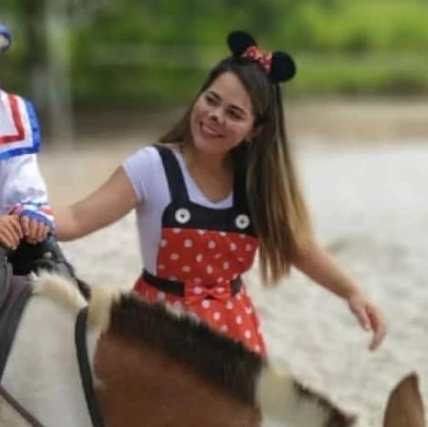

Quem sou eu?

Oi, meu nome é Ingrid Oliveira, sou psicologa!
Ajudo mães a se conectarem com seus filhos de forma autentica e saudável, para que possam desenvolver uma relação de confiança, intima e afetuosa com eles! Através de ferramentas práticas com base na disciplina positiva, criação de diálogos encorajadores, estruturando uma rede de apoio real onde você tenha acesso a outros depoimentos que a deixe mais fortalecida e confiante diante do desafio de maternar, acolhendo e dividindo as suas experiencias!
Como posso te ajudar?

Atendimento clinico
- Atendimento online e presencial para crianças de 2 a 12 anos!
Orientação para mães
- Encontros online: individual ou em grupo
Novidades
É com muita alegria que entrego a vocês esse projeto lindo, cheio de amor e respeito!🥰
De tanto ouvir vocês fazendo essa pergunta : Onde estou errando?
Escolhi unir forças a vocês para modificar e melhorar pensamentos e ações!🥰
Para que possamos ajudar os filhos: na birra, na mentira, quando não seguem regras, quando só querem ficar no celular, parecem que não te escutam, tem medo de dormir só, etc...
Precisamos ter uma relação segura e autêntica, para comunicar com eles de forma direta, firme e gentil!🌻🌻
Link para inscrição na Bio do Instagram!
Mais informações no WhatsApp.🥰🥰
Feliiiizzzz estou! Bora!
Momentos
-

Momento único, com lindas experiencias com as crianças e suas famílias! Colonia realizada por uma das clinicas que trabalho a Clinfono!! No instagram você pode conferir com mais detalhes!
-

-

Aprenda a enxergar a vida como um aspiral, as vezes a gente até da uns passos pra trás, mas nunca voltamos pro mesmo lugar e nunca voltamos a ser como antes. O que foi aprendido e construindo nos modifica de alguma forma!! 🎉 Nossas crianças estão voltando as aulas e elas também passam por esse aspiral! Precisam ter seu tempo respeitado, e terem seus medos e dificuldades acolhidas, para se sentirem seguras para enfrentar o novo e avançar cada degrau do desenvolvimento!
-

Reserve um tempo do seu dia para dedicar ao seu pequeno. 🥳 Ter esse tempo de qualidade com você é tudo que ele precisa! #Acredite ❤️ Por aqui hoje contamos história e fizemos planos juntas! 🚀🦁